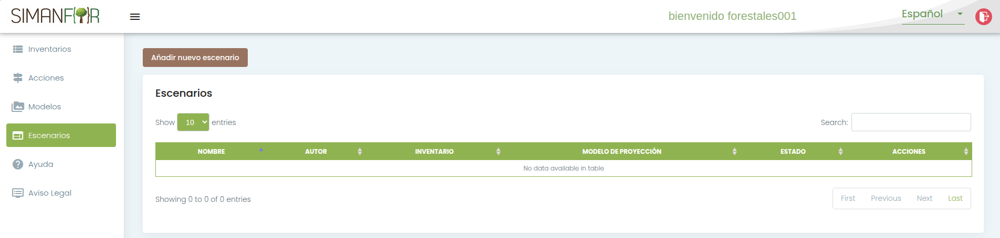
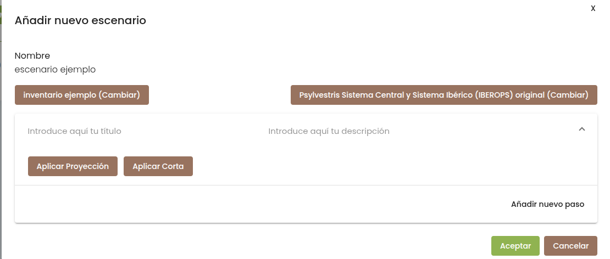
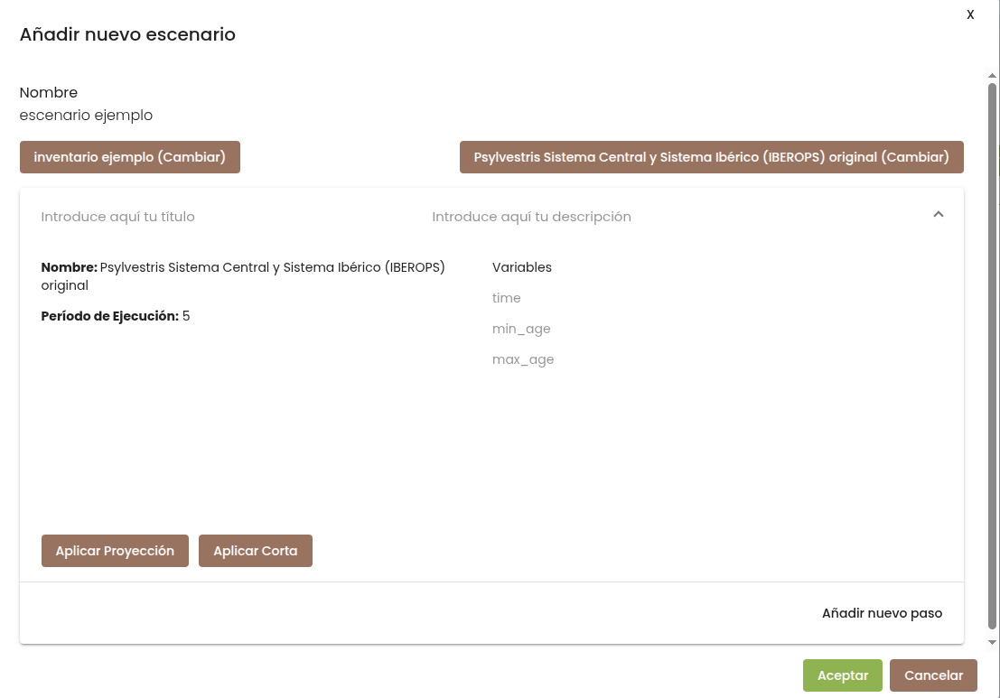
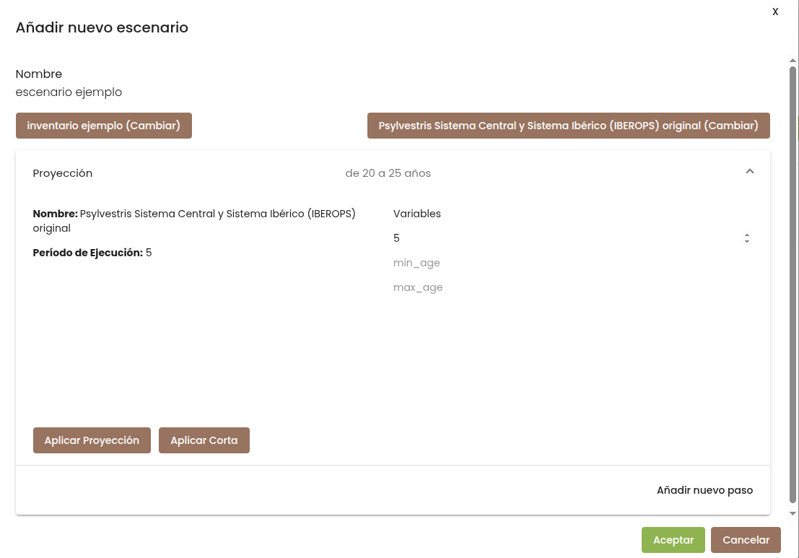
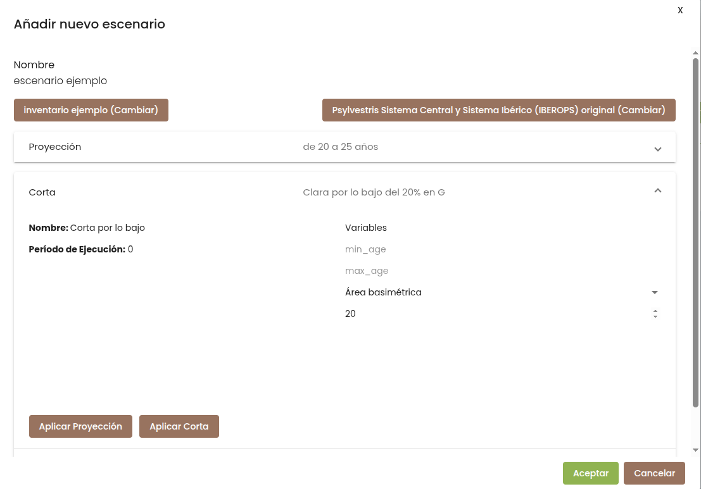
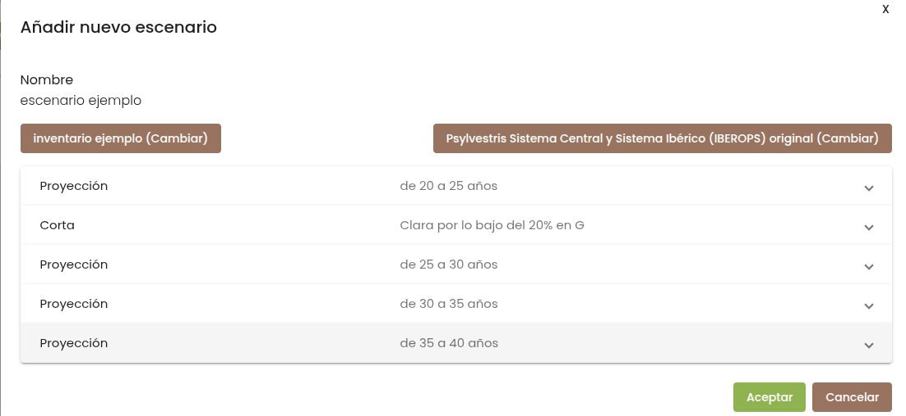
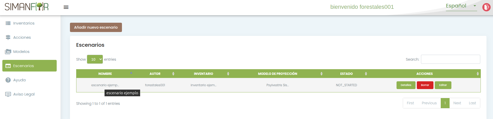

Diseño y configuración de escenarios selvícolas
Un escenario en SIMANFOR define el itinerario técnico que experimentará la masa forestal a lo largo del tiempo. Está compuesto por una secuencia ordenada de operaciones cronológicas: periodos de crecimiento natural (proyecciones) e intervenciones selvícolas (cortas o claras).
Esta guía explica cómo estructurar un escenario en la plataforma web, seleccionar el modelo adecuado, configurar cada operación y registrar la prescripción para su ejecución.
Contenido
- Concepto de escenario en SIMANFOR
- Creación de un nuevo escenario
- Vinculación del inventario inicial y modelo forestal
- Configuración de operaciones de proyección
- Configuración de operaciones de corta
- Ejemplo práctico guiado
- Guardado y registro del escenario
Concepto de escenario en SIMANFOR
El simulador necesita saber qué modelo de crecimiento y producción debe ir asociado al inventario y qué actividades de gestión forestal se aplicarán a lo largo del tiempo.
En la plataforma web, el diseño del escenario se realiza de forma visual encadenando dos tipos de operaciones:
- Proyección: Hace avanzar la masa en el tiempo según las ecuaciones propias del modelo seleccionado, teniendo lugar los procesos de crecimiento, mortalidad natural y regeneración (en caso de que el modelo incluya esta componente).
- Corta: Aplica una extracción de árboles según un tipo de corta, un criterio de selección y una intensidad porcentual determinada, todos ellos definidos por el usuario.
Creación de un nuevo escenario
Para comenzar a diseñar un tratamiento selvícola:
- Accede a la pestaña Escenarios en el menú de navegación principal.
- Haz clic en el botón Añadir nuevo escenario (o Add new scenario).
Aparecerá la tabla de la sección Escenarios. En la parte superior izquierda, haz clic en el botón Añadir nuevo escenario:

Vinculación del inventario inicial y modelo forestal
En la ventana de configuración del nuevo escenario, asigna un nombre reconocible (por ejemplo, escenario ejemplo) y enlaza tus datos y el modelo:
- Pulsa sobre el botón Seleccionar Inventario. En la ventana emergente, localiza tu inventario propio en el buscador de la tabla, márcalo y pulsa en Seleccionar.
- Pulsa sobre el botón Seleccionar Modelo de Proyección. En el catálogo emergente, consulta la descripción para verificar la especie y el ámbito geográfico (o revisa el Índice de modelos), elige el modelo correspondiente y pulsa en Seleccionar.
Una vez vinculados, ambos elementos aparecerán confirmados en la cabecera del formulario:

Verificación del inventario propio
Comprueba siempre que el archivo seleccionado es el que has subido previamente desde tu cuenta de usuario (ver Gestión de inventarios).
Antes de programar las operaciones del escenario, conviene tener en cuenta dos aspectos clave:
- Punto de partida: Tener clara la edad inicial de la masa en el inventario o el año en el que se tomaron los datos de campo. Este dato permite aplicar una selvicultura coherente con el estado de desarrollo del rodal y asegurar la trazabilidad temporal de las actuaciones.
- Esquema de intervención: Planificar qué tipo de actuaciones se aplicarán, el horizonte temporal total a simular y los objetivos específicos perseguidos con cada intervención. Esto facilitará estructurar las operaciones de proyección y corta en el orden correcto. Para profundizar en estos conceptos, consulta la guía de escenarios y los escenarios de ejemplo.
Configuración de operaciones de proyección
Para hacer crecer la masa forestal, haz clic en el botón Aplicar Proyección:

Rellena los siguientes campos:
- Título y descripción: Nombre identificativo para este paso (por ejemplo, título
Proyeccióny descripciónde 20 a 25 años). Es muy recomendable incluir una breve descripción para facilitar el análisis posterior de los resultados. - time (período de ejecución): Número de años que deseas que crezca la masa. Debe coincidir con las opciones que ofrece el modelo elegido (indicadas en la parte izquierda del formulario).
- min_age y max_age (opcionales): Rango de edad de las parcelas a las que se aplicará la proyección. Si tu inventario solo contiene una parcela o deseas que aplique a todas independientemente de su edad, deja estos campos en blanco. Más información en la documentación de escenarios.
Este es un ejemplo de cómo se visualiza una proyección temporal configurada:

Si has terminado de configurar el paso y estás satisfecho, puedes hacer clic en Aceptar para terminar o en Añadir nuevo paso para agregar otra operación selvícola al escenario.
Configuración de operaciones de corta
Para programar una corta o aprovechamiento, haz clic en Aplicar Corta:
Configura los parámetros selvícolas de la intervención (ver modelos de corta para más información):
- Título y descripción: Identifica la intervención (por ejemplo, título
Cortay descripciónClara por lo bajo del 20% en G). - time: En las operaciones de corta este valor debe ser obligatoriamente
0, ya que las cortas se consideran instantáneas respecto al crecimiento. - Tipo de corta:
- Por lo bajo: Extrae preferentemente los árboles más pequeños o dominados (clara tradicional para reducir competencia y favorecer al estrato superior).
- Por lo alto: Extrae preferentemente árboles de copas dominantes o codominantes para abrir huecos en el estrato superior.
- Sistemática: Elimina árboles de todas las clases diamétricas de manera uniforme.
- type (criterio de intervención): Define la variable dasométrica de referencia para cuantificar la intensidad:
Densidad: Porcentaje respecto al número total de pies por hectárea ($N$).Área basimétrica: Porcentaje respecto al área basimétrica total ($G$).Volumen: Porcentaje respecto al volumen maderable total ($V$).
- percent (intensidad): Porcentaje de masa a extraer de acuerdo con el criterio seleccionado (por ejemplo,
20para una clara del 20%).
Ejemplo visual de una corta configurada:

Ejemplo práctico guiado
A continuación se muestra un ejemplo estándar de prescripción selvícola para una masa de Pinus sylvestris (pino silvestre) con una edad de partida de 20 años y un periodo de simulación de 20 años, donde queremos consultar el estado de la masa a los 40 años de edad:

El escenario reproduce la siguiente secuencia cronológica de 5 operaciones:
- Paso 1 (Proyección de 20 a 25 años): Crecimiento inicial de 5 años con el modelo IBEROPS original (
time = 5). - Paso 2 (Corta): Clara por lo bajo moderada extrayendo el 20% del área basimétrica de la masa (
time = 0, tipo Por lo bajo, criterio Área basimétrica, intensidad20%). - Paso 3 (Proyección de 25 a 30 años): Periodo de crecimiento post-intervención de 5 años (
time = 5). - Paso 4 (Proyección de 30 a 35 años): Periodo de crecimiento de 5 años (
time = 5). - Paso 5 (Proyección de 35 a 40 años): Crecimiento final de 5 años (
time = 5), alcanzando los 40 años de edad de la masa.
Guardado y registro del escenario
A medida que configures cada intervención, pulsa en Añadir nuevo paso si deseas continuar agregando operaciones al itinerario selvícola.
Una vez estructurado el ciclo completo, revisa el orden de las etapas y pulsa en Aceptar (o Submit) en la parte inferior del formulario. El escenario quedará guardado en la base de datos de la plataforma y aparecerá en la tabla de la pestaña Escenarios con un identificador único y el estado NOT_STARTED:

Tu escenario está listo para ser ejecutado. Consulta el siguiente apartado, Ejecución de simulaciones y gestión de resultados, para iniciar el cálculo y descargar los informes dasométricos.